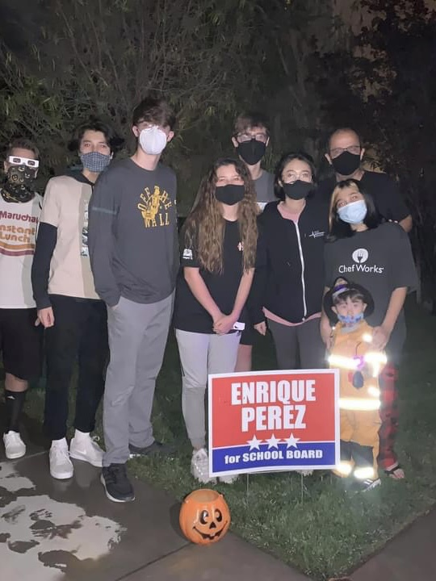
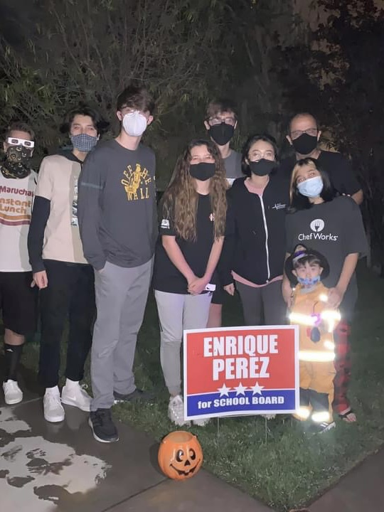

Ana Perez
I am a graduate and alumni of Great Oak High School in Temecula, CA where my G.P.A. was 4.3. I have graduated with a score of 36 for the full International Baccalaureate Diploma and AP Scholars with Honors. I am a hardworking student at University of California, Riverside and am a Pre-Business Major. I have a G.P.A. of 3.91 and my expected graduation in 2025. I am an active member of Kendo Club and am also a University Honors Student. I am fluent in both Japanese and English and have a passion for traveling. I have an international mindset, open minded, and flexible with change. I am very diligent and determined to work hard and love to interact with new people. I am a team player and this can be seen through my experience as a section leader and wind captain of the Spirit of Great Oak Marching Band during high school. I have participated in all facets of the program from being a player to leadership positions in the largest student group at our high school. Organization, leadership skills, time management and communication skills were a must in keeping a group of 180 students engaged with the program.
I was a School Board Campaign Intern in the city of Temecula where I supported local campaign of candidate in local community with social media support, creation of marketing material and distribution of the materials. I have been an Origami Project Organizer where I have experience organizing a zoom platform to teach my peers the cultural significance and how to fold origami cranes. Collected over 3,000 origami cranes to donate to Matter Studio Gallery’s Memorial Crane Project in Los Angeles, CA. I have been a student volunteer at Kujira Gakuen where I assisted with Japanese preschool language education and classroom support to a non-profit pre-kindergarten language and cultural program focused on Japanese culture. Assisted with supervision of class and small work center support of lesson plans. I have been a tutor where I conducted community service work in assisting drop-in students at the local library with homework or those needing additional support in a variety of subject matters.
I have experienced being a study abroad exchange student in Nagasaki, Japan where I attended Sasebo Minami High School. A complete immersion program at a High School for 1 week in Japan and in return hosting students in my home. Supported the English class with daily lessons and also participated in other classes to enrich my understanding of the Japanese High School experience. For my professional working experiences, I have been a Wind Coach for Great Oak High School for the Spirit of Great Oak Marching Band. I was a music coach for woodwinds and brass where I coached 100 high school and middle school students. I have managed the student body at rehearsals and competitions and worked alongside 10 coaches. I helped critique on field and create an 8 minute show every Friday and Saturday with 6 hour practices and 6 hour competition days. With our hard work on the field, we placed 3rd plan at state finals.
Experience
Marching Band Wind Coach
• Music coach for woodwinds and brass - 100 high school/middle school students
• Managed student body at rehearsals/competitions and worked with 10 coaches
• Helped critique on field and create an 8 minute show - 3rd place at state finals
Intern
• Special Project Coordination
• Ad Hoc administrative support
Student Intern
• Supported local campaign of candidate with social media support
• Creation of marketing material
• Distribution of materials
• Worked alongside campaign teammates
Education
UC Riverside
Portfolio


